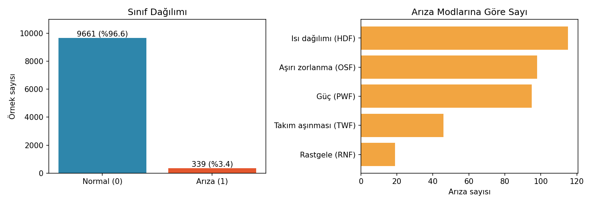
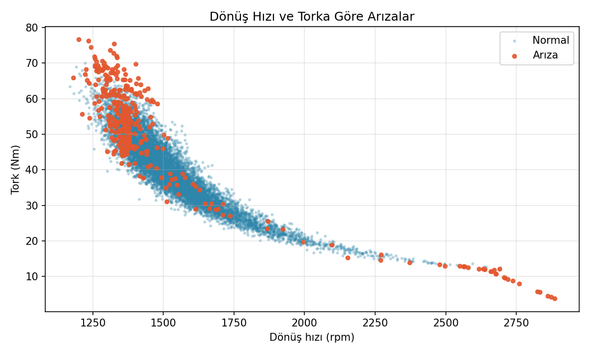
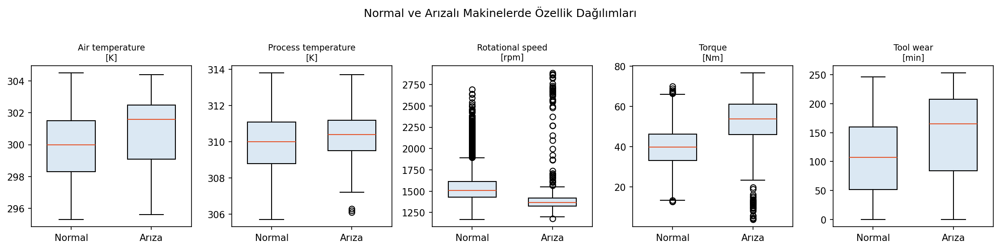
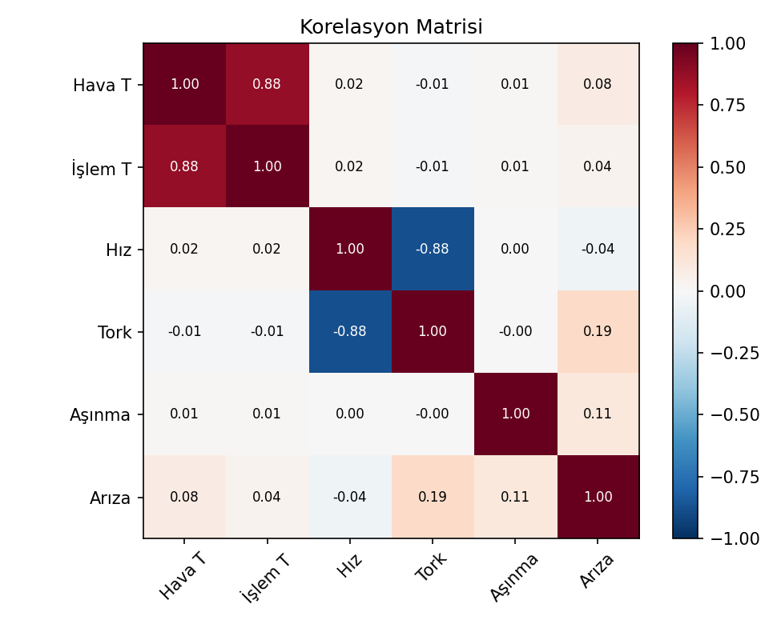
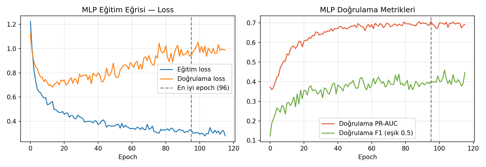
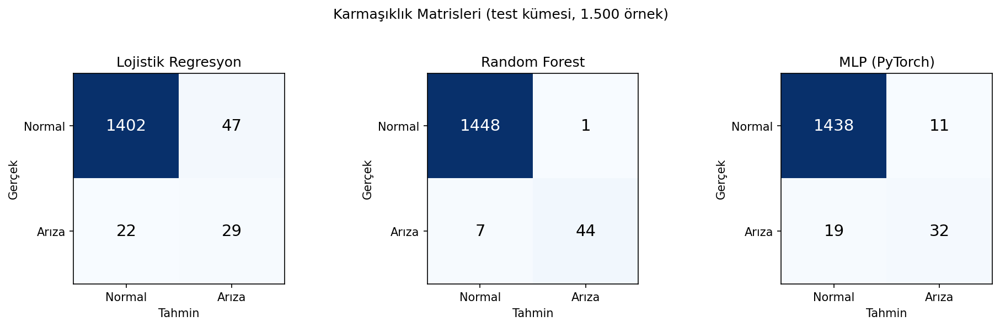
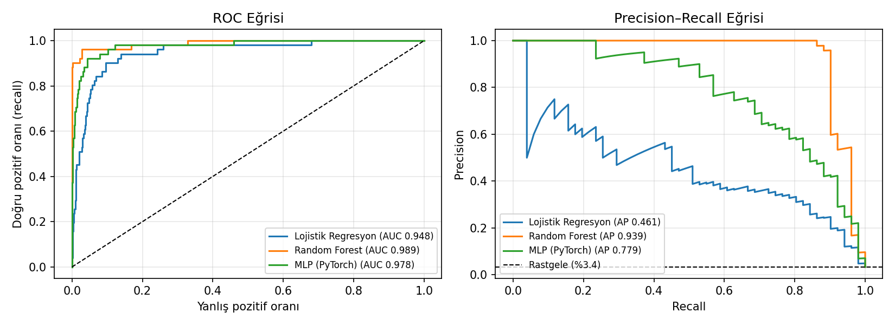
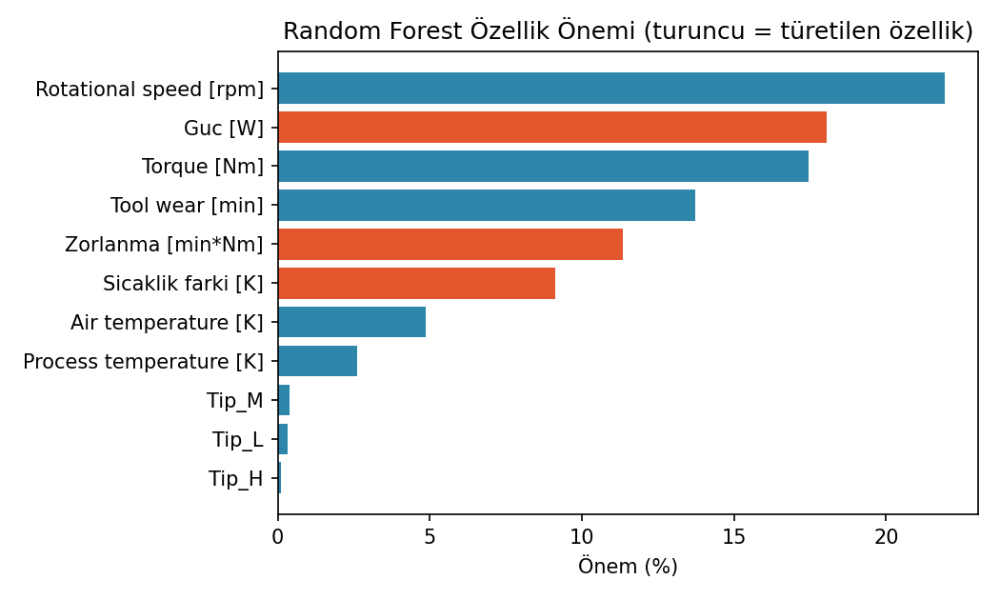

Lojistik Regresyon, Random Forest ve PyTorch Yapay Sinir Ağı (MLP) karşılaştırması · Dengesiz veride sınıflandırma
Üretim hatlarında ve havacılık bakımında plansız arızalar; üretim kaybına, yüksek onarım maliyetine ve güvenlik riskine yol açar. Bu projenin amacı, bir freze tezgâhının sensör ölçümlerinden (ortam ve işlem sıcaklığı, dönüş hızı, tork, takım aşınması, ürün kalite tipi) makinenin arızalanıp arızalanmayacağını tahmin eden bir model geliştirmektir. Girdi 6 ham ölçümdür; hedef çıktı Machine failure (1 = arıza, 0 = normal) etiketidir. Gerçek dünyada amaç bakımı arızadan önce planlamaktır. Kaçırılan bir arıza, gereksiz bir kontrolden çok daha pahalı olduğu için recall (arızaları yakalama oranı) en kritik metrik olarak belirlenmiştir.
AI4I 2020, gerçek kestirimci bakım verisini yansıtacak şekilde hazırlanmış, açık lisanslı (CC BY 4.0) sentetik bir veri setidir. 10.000 örnek ve 14 sütun içerir; eksik değer ve tekrar eden satır yoktur.
| Değişken | Tip | Açıklama |
|---|---|---|
| Type | kategorik | Ürün kalite varyantı: L (düşük, %50), M (orta, %30), H (yüksek, %20) |
| Air / Process temperature [K] | sayısal | Ortam ve işlem sıcaklığı |
| Rotational speed [rpm], Torque [Nm] | sayısal | Mil dönüş hızı ve tork |
| Tool wear [min] | sayısal | Takım aşınma süresi |
| Machine failure | hedef (0/1) | Makine arızası — 339 arıza / 10.000 (%3,39) → ciddi sınıf dengesizliği |
| TWF, HDF, PWF, OSF, RNF | 0/1 | Arıza modları: takım aşınması (46), ısı dağılımı (115), güç (95), aşırı zorlanma (98), rastgele (19) |
UDI ve Product ID kimlik sütunları çıkarıldı.



| Adım | Uygulama | Gerekçe |
|---|---|---|
| Eksik / aykırı değer | Kontrol edildi: eksik değer ve tekrar eden satır yok. Aykırı değerler fiziksel olarak anlamlı olduğu için korundu. | Yüksek tork veya aşınma, arızanın sinyalidir; silinirse bilgi kaybolur |
| Özellik mühendisliği | Sıcaklık farkı (işlem − ortam), Güç = tork × hız × 2π/60 [W], Zorlanma = aşınma × tork | Arıza mekanizmalarının fiziksel karşılıkları (ısı, güç, aşırı zorlanma) |
| Encoding | Type → one-hot (Tip_L, Tip_M, Tip_H) | Kategoriler arasında sıralı büyüklük varsayımından kaçınmak |
| Veri bölme | Stratified %70 eğitim (7.000) / %15 doğrulama (1.500) / %15 test (1.500); her kümede arıza oranı %3,4 | Model ve eşik seçimi doğrulama kümesinde; test yalnızca en sonda |
| Ölçekleme | StandardScaler yalnızca eğitim kümesine fit edildi (LR ve MLP için) | Test bilgisinin modele sızmasını önlemek |
| Dengesizlik | class_weight="balanced" (LR, RF) ve pos_weight ≈ 28,5 (MLP) | Azınlık sınıfın (arıza) hatasını daha ağır cezalandırmak |
| Model | Rolü | Temel hiperparametreler / mimari |
|---|---|---|
| Lojistik Regresyon | Temel (baseline) model: doğrusal, yorumlanabilir | class_weight=balanced, max_iter=2000 |
| Random Forest | Doğrusal olmayan ilişkileri ve etkileşimleri yakalar; tablo verisinde güçlü | 300 ağaç, class_weight=balanced_subsample. GridSearchCV (5 katlı stratified, F1) ile max_depth ∈ {8, 12, None} ve min_samples_leaf ∈ {1, 3, 5} arandı → max_depth=12, min_samples_leaf=3 (CV F1 = 0,860) |
| MLP (PyTorch) | Derin öğrenme yaklaşımı | Girdi 11 → Dense 64 (ReLU, Dropout 0,2) → Dense 32 (ReLU, Dropout 0,2) → Dense 1. Loss: BCEWithLogitsLoss(pos_weight). Optimizer: Adam (lr = 0,001, weight decay = 1e-4) |
Makine öğrenmesi: LR doğrudan eğitim kümesinde eğitildi. RF'nin hiperparametreleri eğitim kümesinde 5 katlı çapraz doğrulama ile seçildi (9 kombinasyon × 5 kat).
Derin öğrenme: MLP en fazla 150 epoch, batch size 128 ile eğitildi. Her epoch sonunda doğrulama PR-AUC'si izlendi; 20 epoch boyunca iyileşme olmazsa erken durdurma uygulandı ve en iyi ağırlıklar geri yüklendi. Eğitim 116. epoch'ta durdu; en iyi model 96. epoch'ta elde edildi (doğrulama PR-AUC 0,707).
Karar eşiği: Dengesiz veride varsayılan 0,5 eşiği en iyi seçim değildir. Her modelin eşiği, doğrulama kümesinde F1'i en yüksek yapan değere ayarlandı: LR 0,857 · RF 0,639 · MLP 0,957.

| Model | Accuracy | Precision | Recall | F1 | ROC-AUC | PR-AUC |
|---|---|---|---|---|---|---|
| Lojistik Regresyon | 0,954 | 0,382 | 0,569 | 0,457 | 0,948 | 0,461 |
| Random Forest ★ | 0,995 | 0,978 | 0,863 | 0,917 | 0,989 | 0,939 |
| MLP (PyTorch) | 0,980 | 0,744 | 0,627 | 0,681 | 0,978 | 0,779 |



| Özellik seti | Precision | Recall | F1 | PR-AUC |
|---|---|---|---|---|
| Yalnızca ham özellikler | 0,712 | 0,725 | 0,718 | 0,760 |
| Ham + türetilen (sıcaklık farkı, güç, zorlanma) | 0,978 | 0,863 | 0,917 | 0,939 |
| Arıza modu (test) | Arıza | Yakalanan | Oran |
|---|---|---|---|
| Güç (PWF) | 11 | 11 | %100 |
| Aşırı zorlanma (OSF) | 15 | 15 | %100 |
| Isı dağılımı (HDF) | 21 | 19 | %90,5 |
| Takım aşınması (TWF) | 5 | 1 | %20 |
Bir örnek birden fazla modda işaretli olabildiği için toplamlar 51'i aşabilir.
Kaçırılan 7 arıza (yanlış negatif):
Tek yanlış alarm: Düşük hız (1.296 rpm), yüksek tork (58 Nm) ve 204 dk aşınma ile riskli bölgede. Pratikte bu makinenin kontrol edilmesi zaten mantıklı.
Random Forest modeli, dengesiz bir veri setinde arızaların %86'sını yakaladı ve 1.449 normal makineden yalnızca birine yanlış alarm verdi (precision %97,8). Bu performans, bakım ekibinin sınırlı kaynağını gerçekten riskli makinelere yönlendirebilecek düzeyde. Projenin en önemli dersleri: dengesiz veride doğru metrik seçimi (accuracy değil F1, recall ve PR-AUC), veri sızıntısından kaçınma ve alan bilgisine dayalı özellik mühendisliğinin model karmaşıklığından daha fazla kazandırabilmesi.
Güçlü yönler: Yüksek precision, açıklanabilir özellik önemleri, sızıntısız ve tekrarlanabilir değerlendirme (sabit seed). Zayıf yönler: Takım aşınması arızalarını yakalayamıyor. Veri sentetik olduğundan gerçek tezgâhlarda yeniden doğrulanmalı. Test kümesinde yalnızca 51 arıza var, yani metriklerin belirsizliği yüksek.
Geliştirme önerileri: (1) Bakım ekibinin kaçırılan arıza ve yanlış alarm maliyetlerine göre eşiği ayarlamak (ör. recall ≥ %95 hedefi). (2) TWF için aşınma süresine dayalı ayrı bir kural veya model. (3) XGBoost/LightGBM ve SMOTE ile dengesizlik denemeleri. (4) Zaman serisi sensör verisi elde edilirse LSTM/GRU ile kalan ömür (RUL) tahmini. (5) Olasılık kalibrasyonu ve SHAP ile tekil tahmin açıklamaları.